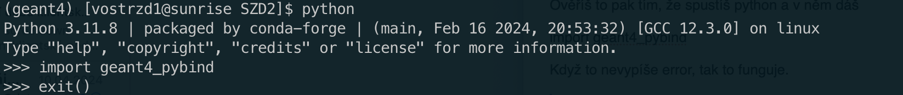
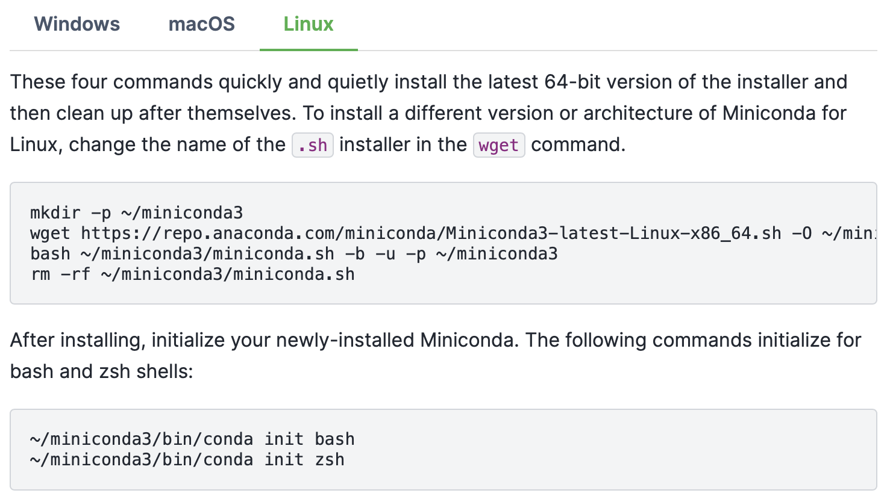
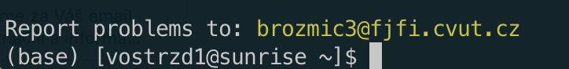
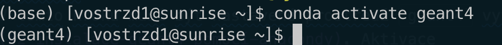

Geant4 instalace&setup¤
Setup bez vlastní lokální instalace¤
C++¤
Správné prostředí se nastaví pomocí
Projekt test_geant.cpp pak lze kompilovat příkazem
Python¤
Prostředí se nastaví pomocí
Info
Tohle pak můžeme předělat na tvoje, až si to nainstaluješ.
Správnost nastavení si lze ověřit zapnutím pythonu (příkaz python) a následně uvnitř Pythonu příkazem
Pokud se nevypíše žádný error, setup proběhl úspěšně.

Instalace pro Python¤
Pro instalaci použijeme Anacondu, což je package a environment manager pro Python. Jedná se o jednu z oficiálně doporučených instalací Geant4. Pří lokální instalaci tímto způsobem půjde kompilovat i C++ verze Geantu.
Příprava Geant4 pro Python je popsána v následujících krocích.
Note
Pro instalaci je dobré mít otevřený nový terminál, ve kterém nejsou setupovaná žádná prostředí.
1. Instalace Anacondy¤
V prvním kroku je potřeba nainstalovat Anacondu z oficiálních stránek. Nejjednodušší je instalace z příkazového řádku.
Warning
Při instalaci z příkazového řádku je potřeba spustit oba sety příkazů, tedy i ten, který obsahuje init.

Anaconda automaticky updatuje váš ~/.bashrc, což znamená, že se Anaconda inicializuje při každém novém otevření terminálu. Pokud toto chování nechcete, je potřeba setup Anacondy z ~/.bashrc vymazat a přesunout do samostatného setup souboru, který budete používat pro setup Anacondy. Zmiňovaný úsek je následující (se změnou cesty na tu vaši):
...
# >>> conda initialize >>>
# !! Contents within this block are managed by 'conda init' !!
__conda_setup="$('/home/vostrzd1/miniconda3/bin/conda' 'shell.bash' 'hook' 2> /dev/null)"
if [ $? -eq 0 ]; then
eval "$__conda_setup"
else
if [ -f "/home/vostrzd1/miniconda3/etc/profile.d/conda.sh" ]; then
. "/home/vostrzd1/miniconda3/etc/profile.d/conda.sh"
else
export PATH="/home/vostrzd1/miniconda3/bin:$PATH"
fi
fi
unset __conda_setup
# <<< conda initialize <<<
...
Pro ověření, že vše funguje, jak má, je potřeba zavřít a znovu otevřít terminál. Pokud jste setup ponechali v ~/.bashrc, mělo by se vedle vašeho jméno objevit (base), což znázorňuje základní Anaconda prostředí. Pokud jste setup přesunuli do jiného souboru, je potřeba tento skript nejdříve spustit.

2. Instalace Geant4 pomocí Anacondy¤
Instalace Geant4 pomocí Anacondy je popsána v oficiálním instalačním návodu Geant4. Pokud byla Anaconda správně nainstalována, stačí spustit následující příkazy
- Vytvoří prostředí s názvem
geant4na nainstaluje do něj Geant4. - Aktivuje prostředí s názvem
geant4.
Inicializace prostředí pomocí druhého příkazu je nutná vždy po otevření nového terminálu.
Po aktivace se změní text v závorce vedle vašeho jména v terminálu z (base) na (geant4):

3. Instalace knihovny Geant4 pro python¤
Warning
V tomto kroku musí být nastavené prostředí geant4 vytvořené v předchozím kroku. Aktivace probíhá příkazem
(geant4).
Instalace Geant4 knihovny pro Python probíhá spuštěním následujícího příkazu
Správnost instalace si lze ověřit zapnutím pythonu (příkaz python) a následně uvnitř Pythonu příkazem
Pokud se nevypíše žádný error, setup proběhl úspěšně.